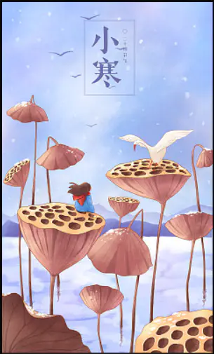

词：黄婷
曲：PAN
原唱：古巨基
虽然没能 穿上披风
化身超人英雄
虽然没做 一呼百诺
万人迷的总统
懵懵懂懂 碌碌庸庸
寻遍宇宙苍穹
找到你是我 最伟大的成功
我不在乎 活得平凡辛苦
日子渺小重复
儿时作的梦 褪色荒芜
我不孤独 在有你的旅途
我就心无旁骛
陪你看日出 在暮色中漫步
有时晴朗 有时无常
一辈子的天空
我们一起 每分每秒
穿越同个时空
缓下步伐 再不莽撞
闷着头往前冲
用尽我所能 珍惜你而从容
我不在乎 活得平凡辛苦
日子渺小重复
儿时作的梦 褪色荒芜
我不孤独 在有你的旅途
我就心无旁骛
陪你看日出 在暮色中漫步
很专注 很幸福
都是幸福
我愿糊涂 背着爱的包袱
走得义无反顾
管它谁笑我 执迷不悟
我很满足 有你同甘共苦
哪怕岁月仓促
一生的脚步 在你灵魂停驻
很专注 很幸福
